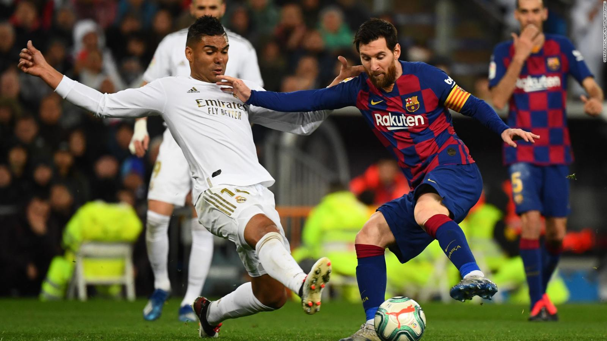

Su creación es atribuida a Inglaterra, país que reglamentó el juego en 1863 a través de la Football Association (FA), la primera asociación del fútbol. Pero mientras nadie duda que el fútbol moderno nació en tierras británicas, no hay tantas certezas con respecto a qué civilización fue la primera en jugar al balompié
Fue celebrada por primera vez en 1955, y fue conocida como la Copa de Clubes Campeones Europeos hasta 1991. ... El torneo se disputa anualmente desde 1955 y el primer campeón fue el Real Madrid de España, siendo el club con más títulos, 13 en total: 6 en el antiguo formato y 7 en el nuevo.
el 2 de agosto de 1959, aquella reunión extensa se volvió histórica. Con 8 votos a favor y uno en contra (Uruguay), además de la abstención de Venezuela, la CSF resolvió por mayoría, la creación de la Copa de Campeones (así se la llamó). Recién después de la sesión del congreso entre el 27 y 30 de agosto de 1959 presidido por Fermín Sorhueta (Uruguay) se decidió que la competencia se llamará “Libertadores de América”, en homenaje a los héroes que cimentaron la creación de las naciones sudamericanas. El primer partido en la historia del certamen fue el protagonizado entre Peñarol de Uruguay y Jorge Wilstermann de Bolivia, que finalizó con un abultado 7-1 en favor del equipo uruguayo. Se disputó el 19 de abril de 1960. El campeón de esa edición fue Peñarol, que superó en la final al Olimpia de Paraguay. El ganador de esta competición disputa la Recopa Sudamericana y la Copa Mundial de Clubes de la FIFA. Se disputa en el primer semestre de cada año. El club con más títulos es Independiente con siete y el máximo goleador es el ecuatoriano Alberto Spencer con 54 tantos.
Este evento deportivo se realiza cada cuatro años desde 1930, con la excepción de 1942 y 1946, en los que se suspendió respectivamente debido al desarrollo y las consecuencias de la Segunda Guerra Mundial. Cuenta con dos etapas principales: un proceso clasificatorio en el que participan en la actualidad cerca de 200 selecciones nacionales y una fase final realizada cada cuatro años en una sede definida con anticipación en la que participan 32 equipos (48 a partir de la edición de 2026) durante un periodo cercano a un mes. El balón oficial es fabricado por la compañía alemana de equipamiento deportivo Adidas.
|  | ||
 |
||
 |
 |